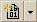
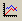
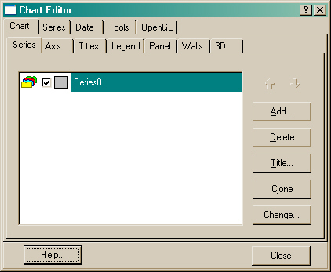

The Chart Viewer window displays plot data in chart form. ASAP chart files are listed in ASAP Workspace under Chart Viewer . Display features can be modified and enhanced in the Chart Viewer Editor.
Tiling Charts: When more than one chart is generated, you can
view them in one window by clicking
 (Tile) on the Chart Viewer window toolbar.
(Tile) on the Chart Viewer window toolbar.
Annotation toolbar: Plots can be annotated with the Annotation toolbar (shown on the left above).
Saving Chart Files: You can save Chart files in XML File format). From the File menu, select Save As. In the dialog box, select Chart Files (*.plx) under Files of Type.
Enabling or Disabling the Chart Viewer can be done in two ways via the:
- User Interface Preferences dialog box, Plot Viewer tab: To view graphs in the Chart Viewer rather than the Plot Viewer, the option, Display graphs in Chart Viewer must be selected. The Chart Viewer offers more options.
- Command Input window by using the $GUI command, $GUI CHARTS_ON or $GUI CHARTS_OFF. When the Chart Viewer is disabled, the Plot Viewer displays plots.
Templates
You can load and save templates by clicking
 on the Chart Viewer toolbar, or delete templates by
clicking
 on the toolbar.
on the toolbar.
Chart Viewer Commands using $GUI
$GUI APPLYCHARTTEMPLATE applies the current template to all subsequent and similar chart types, as specified in the $GUI SETCHARTTEMPLATE command, described below.
$GUI APPLYCHARTTEMPLATE DEFAULT turns off the application of a template.
$GUI SETCHARTTEMPLATE GRAPH templateName sets the current template for any graph chart that will be used with the $GUI APPLYCHARTTEMPLATE command. The template can be applied only to similar chart types (in this case, GRAPH).
Chart Viewer Editor
Chart display features affect the overall appearance of charts generated in ASAP. They include those properties and methods that define the color of the chart background, titles and their position, margins, borders, background images, frame and axis, pen colors and widths, 3D, and walls. Nearly all chart properties are available for editing in the Chart Editor. To open the Chart Editor, select  (Edit Chart Properties) on the Chart Viewer toolbar. The overall chart appearance characteristics are grouped by tabs, as shown here.
